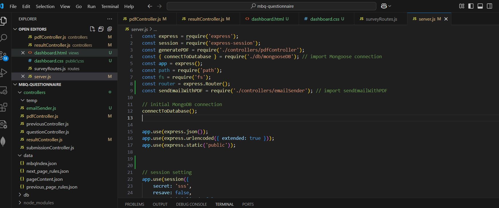

MBQ Project
Project Overview
This project is an online questionnaire system designed to collect data from parents regarding their children’s behavior and development. The platform uses advanced data visualization techniques to help both researchers and parents effectively understand the child's status after joining the research program.
The system utilizes sophisticated mathematical algorithms to process the data and generate visual charts that represent the child's progress and behavioral patterns. These visual reports can then be sent via email to the individuals who filled out the questionnaire.
In addition, the data is securely stored in a private database, accessible only by clinicians and researchers for further study. All data is protected in accordance with medical information security standards, ensuring privacy and confidentiality.
The project is still in expansion, continuously improving its features and capabilities to support more participants and provide deeper insights into child development.
User Interface Design
The user interface has been designed with a focus on simplicity and usability. Researchers and parents can easily navigate the platform, ensuring that data input and visualization are efficient and intuitive.

Data Visualization
The system includes custom visualizations to display the collected data in an interactive and easy-to-understand format. This feature helps researchers analyze trends and behavior patterns over time.
API Integration
The backend architecture and how the MongoDB database integrates with the Node.js APIs. These APIs facilitate seamless data retrieval and interaction with the front-end interface.
Skills Used in This Project
- Node.js
- MongoDB
- Express.js
- APIs
- Data Visualization
- UX/UI Design
- JavaScript
- HTML/CSS
- Responsive Design